Projetos
Painel de Performance das Unidades
Utilizando essa ferramenta, mapeamos de forma abrangente todos os dados de aproximadamente vinte unidades de saúde que compõem a RioSaúde. Nela, reunimos informações gerenciais cruciais, como volume de atendimentos, classificações, óbitos e demais indicadores que embasam decisões estratégicas e otimizam a gestão da saúde.
Ferramenta: Postgres e Power BI
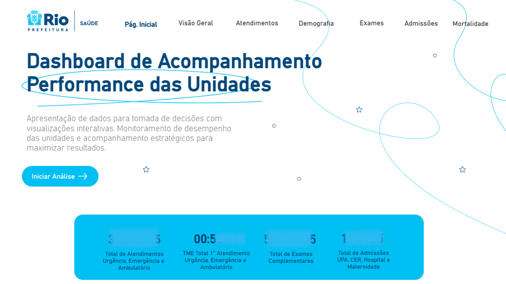
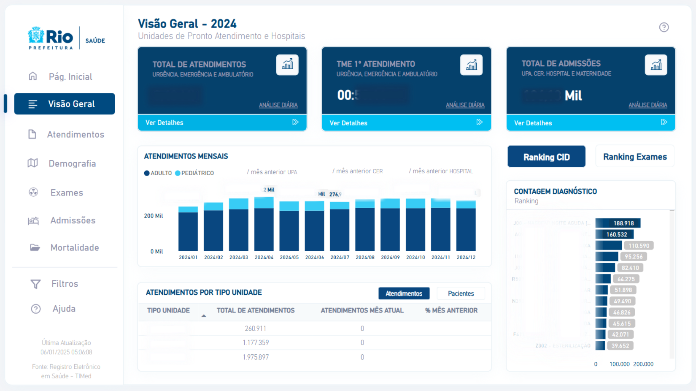
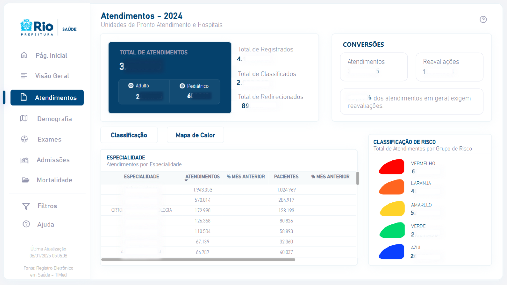
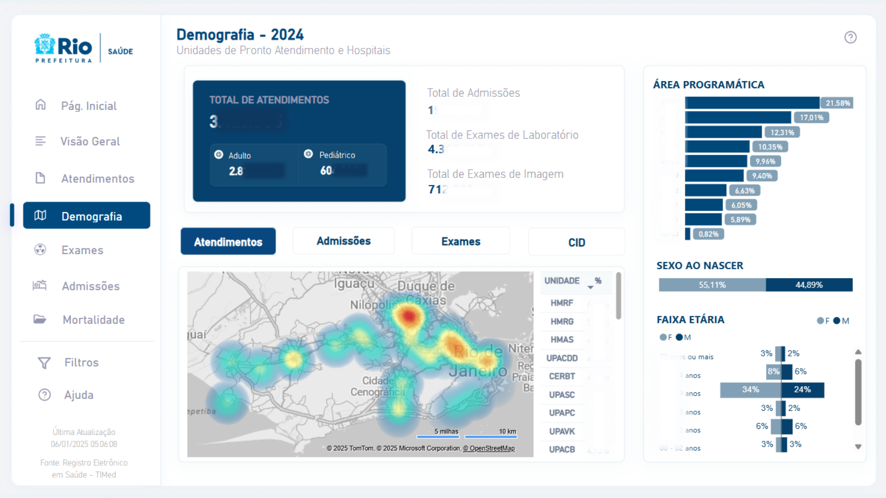
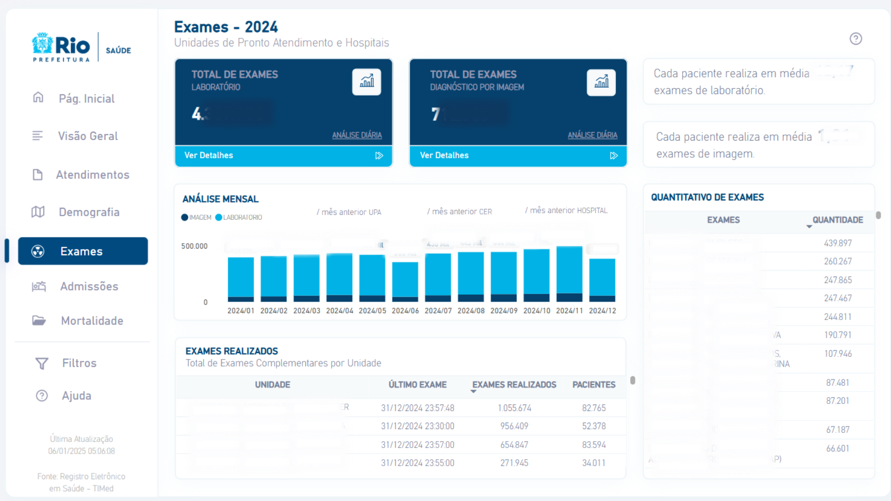
Dashboard de Controle Financeiro
A Diretoria de Finanças da empresa necessitava de um dashboard para controle do envio de notas fiscais e o processo até o pagamento. Baseado no que eles chamam de "Planilhão", foi desenvolvido o Dash abaixo. Obs.: Foram embaçados os dados sensíveis.
Ferramenta: Power Bi e Planilha Compartilhada
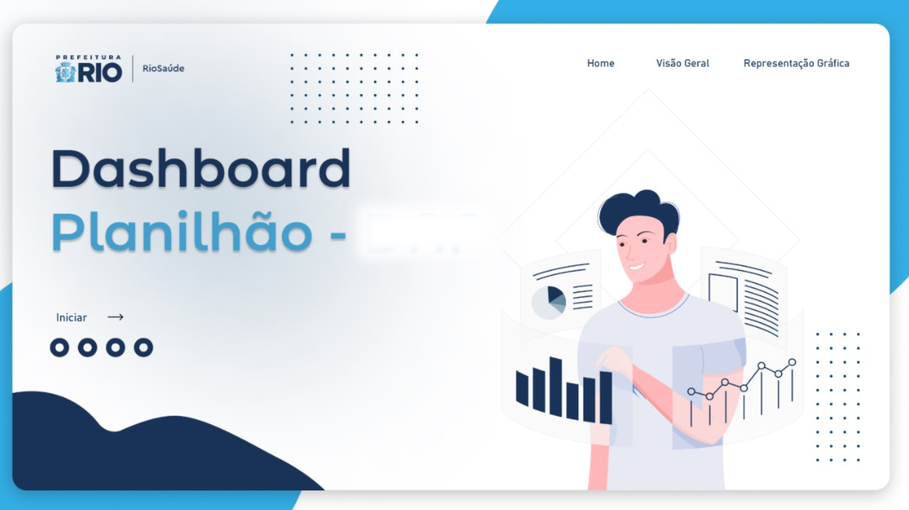
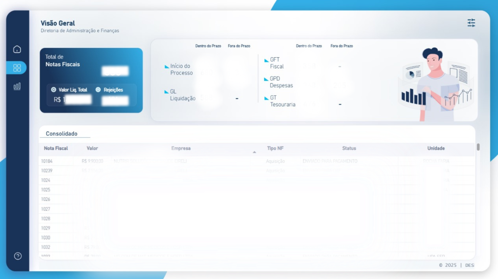
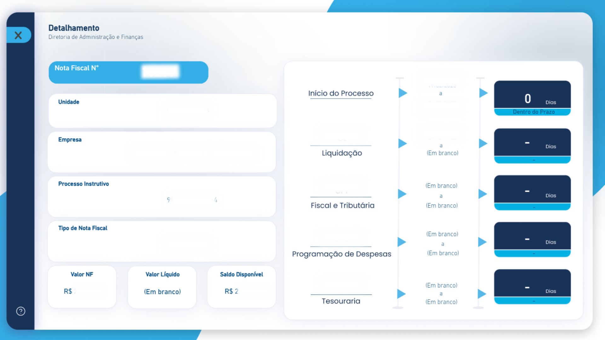
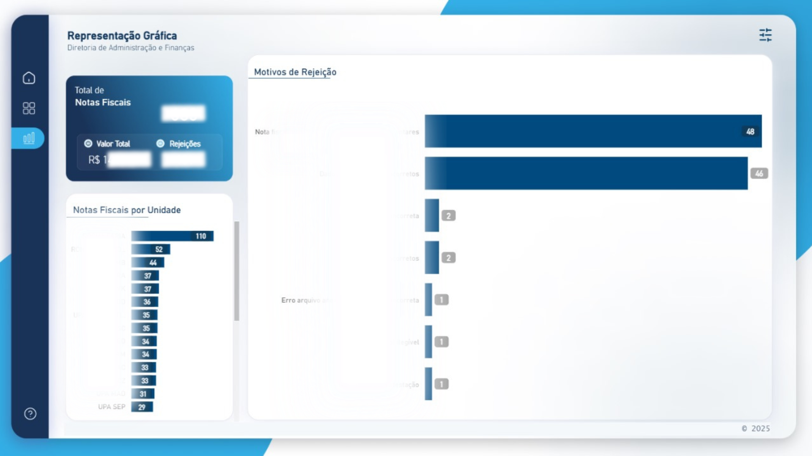
Produção Diária
Este dashboard é atualizado a cada 30 minutos e oferece uma visão abrangente dos atendimentos diários. Nele, é possível visualizar os atendimentos por unidade, categorizados por nível de risco e total de atendimentos. Além disso, conta com um mapa de calor que detalha os atendimentos realizados por médico e por classificação, permitindo uma análise rápida e eficiente do desempenho e da distribuição dos atendimentos.
Ferramenta: Postgres e Power Bi
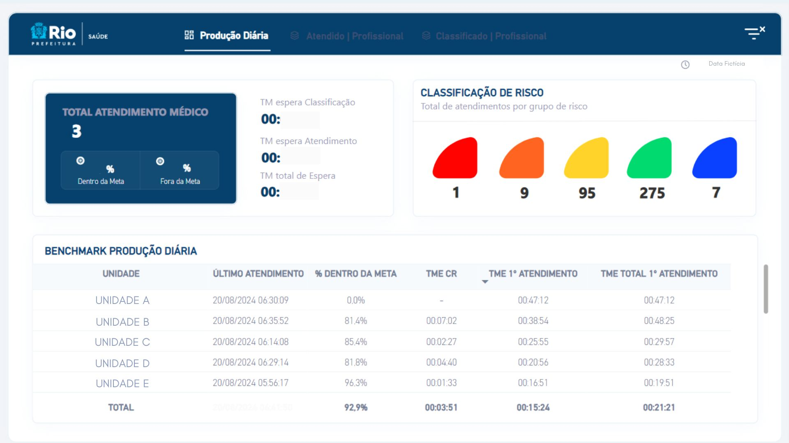Dashboard de Controle de RH
Realizado para a Diretoria de Recursos Humanos, este dashboard apresenta informações detalhadas sobre o número de colaboradores, sua distribuição por áreas, movimentações internas e indicadores relevantes para a gestão de pessoas.
Ferramenta: Power BI
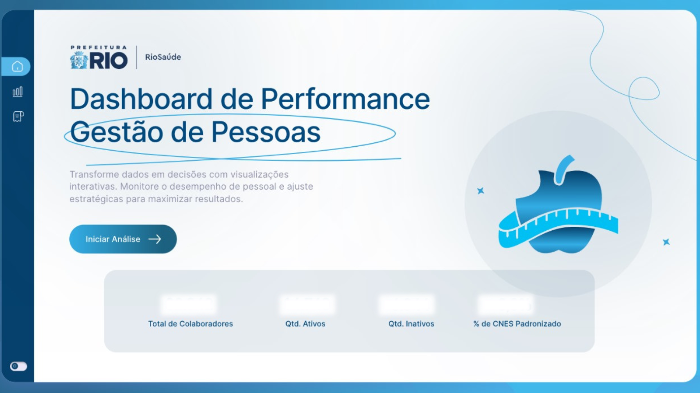
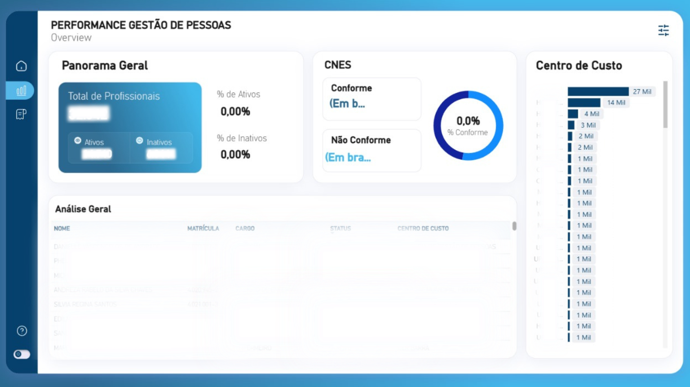
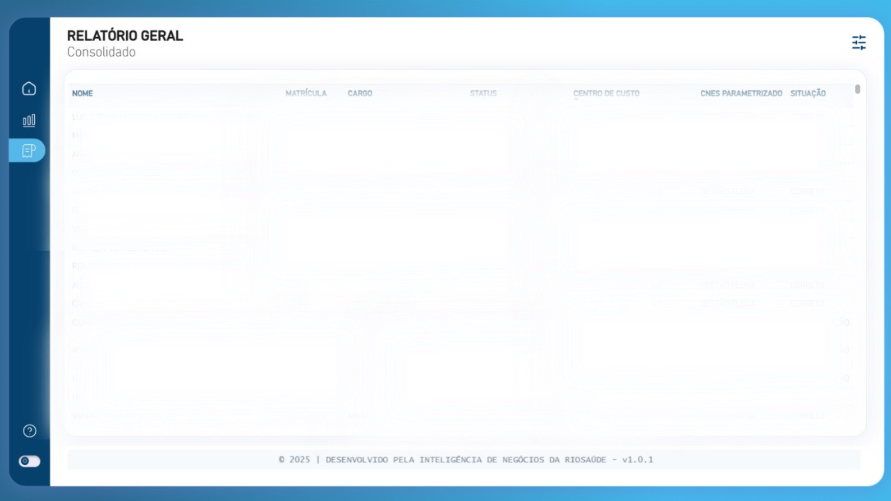
Tempo de Espera
O Dashboard de Gestão de Tempo de Espera oferece uma visualização em tempo real do tempo de espera nas unidades de saúde, classificada por categorias de risco. Essa ferramenta permite que pacientes vejam estimativas de espera ao entrar na unidade, promovendo transparência e reduzindo a ansiedade. Além disso, ajuda os gestores a alocarem recursos de forma eficiente e a melhorarem o fluxo de atendimento.
Ferramenta: Postgres e Power Bi

Processos Vigentes
Este dashboard é baseado em dados extraídos diretamente do Google Sheets e apresenta uma visão clara dos processos vigentes da empresa. Nele, você poderá acompanhar informações relevantes, como o status atual de cada processo, prazos, responsáveis e outros detalhes essenciais. Essa ferramenta facilita a gestão e o monitoramento eficiente, permitindo uma análise mais rápida e informada das atividades em andamento.
Ferramenta: Google Sheets e Looker Studios
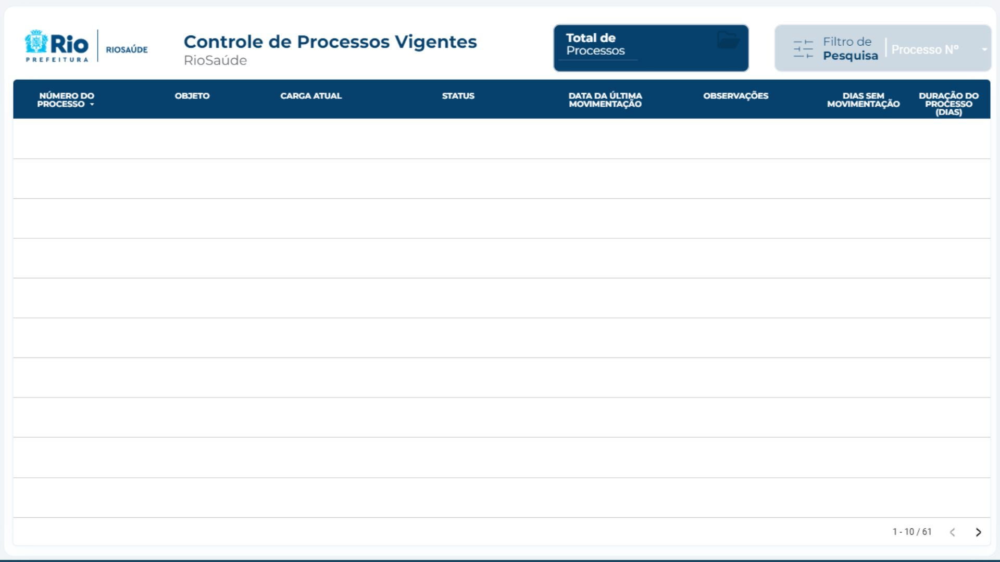Transcritor de Áudio
Através desta aplicação, é possível transcrever o áudio de uma gravação em tempo real.
Ferramenta: Python, HTML, CSS e Docker
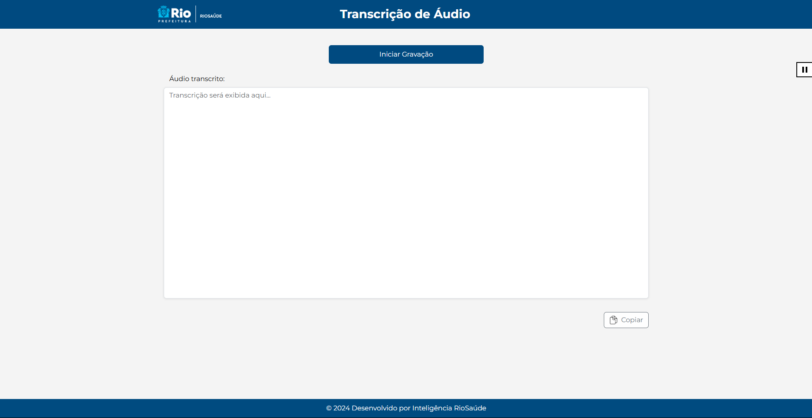Automação de Checklist
A rotina diária de um técnico de TI inclui verificar o status de alguns sites e seu correto funcionamento. Afim de tornar esse hábito mais rápido e evitar erros, desenvolvi este aplicativo que automaticamente entra nos sites que preciso, fecha a página e ao final me retorna se está OK (no ar) ou offline. Obs.: Informações borradas para manutenção do sigilo profissional.
Ferramenta: Python
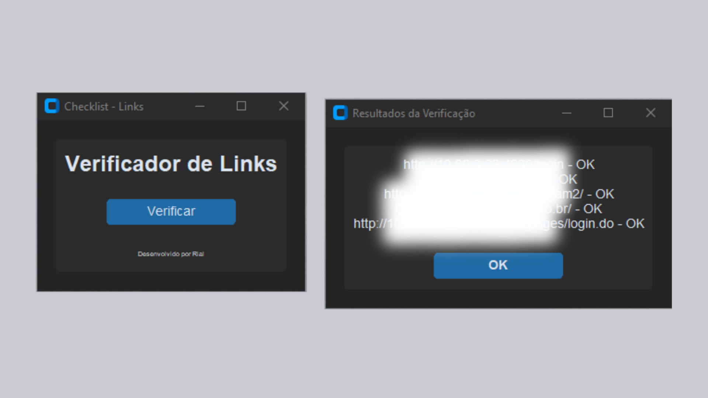